Návod 01
Stiahnutie modpacku
Postup stiahnutia, importovania a spustenia modpacku Modserver3 v CurseForge.
1. Otvorenie importu modpacku
V CurseForge otvor oddelenie Minecraft, prejdi na záložku My Modpacks a klikni na tlačidlo Import.
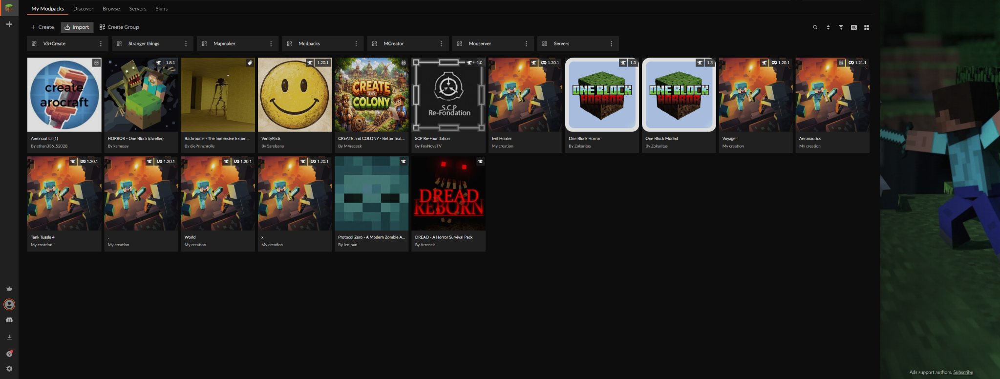
2. Získanie a zadanie kódu modpacku
Napíš Heafastovi/Lukášovi alebo priamo do WhatsApp skupiny Modserver3 a požiadaj niekoho o kód na stiahnutie modpacku. Kód zadaj do poľa Use Profile Code a potvrď tlačidlom Import.
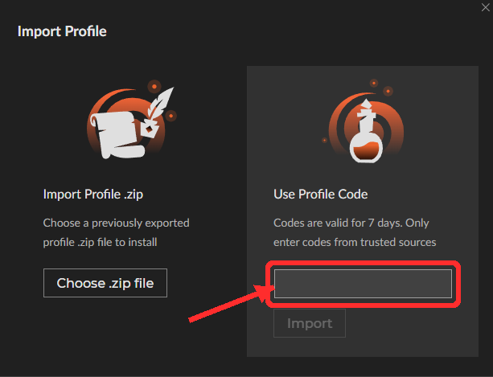
3. Pridanie servera a prvé pripojenie
Spusti Minecraft, otvor Multiplayer a klikni na Add Server. Ako názov servera zadaj Modserver3 a do poľa Server Address vlož 116.202.51.118:20000. Potom klikni na Done a pripoj sa na server.
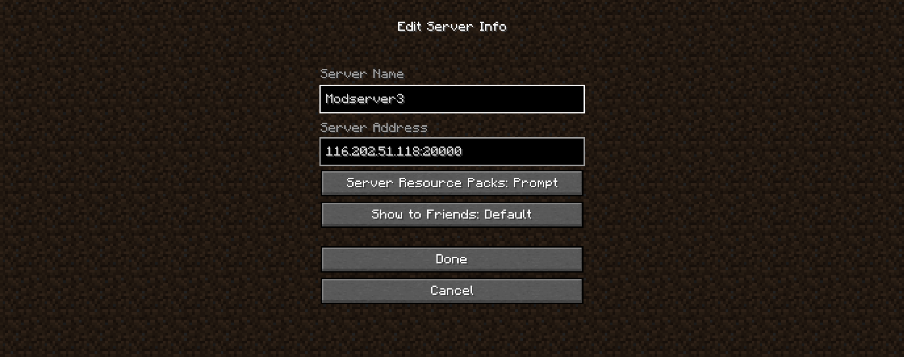
Návod 02
Stiahnutie CurseForge
CurseForge je potrebný na jednoduchú inštaláciu a spustenie modpacku.
1. Stiahnutie inštalátora
Choď na stránku CurseForge a klikni na tlačidlo Download on Overwolf.
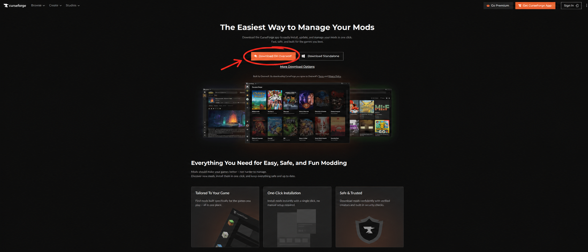
2. Spustenie inštalátora
Po stiahnutí otvor inštalačný súbor CurseForge. Klikni na Next, následne potvrď Terms of Use a znova pokračuj tlačidlom Next. Nakoniec klikni na Accept & Install.
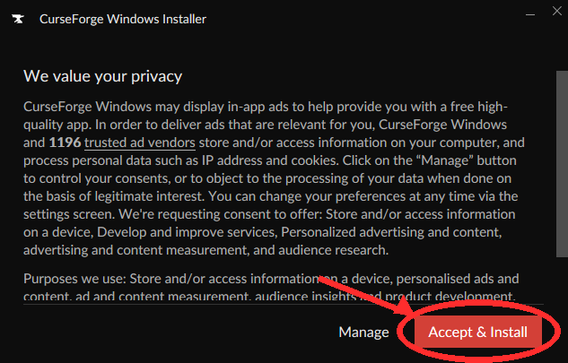
3. Kontrola Minecraftu
Keď sa CurseForge otvorí, skontroluj, či našlo Minecraft. Ak to vyzerá ako na obrázku, máš všetko správne a môžeš ísť na stiahnutie modpacku. Ak CurseForge Minecraft nenašlo, pokračuj na ďalší krok.
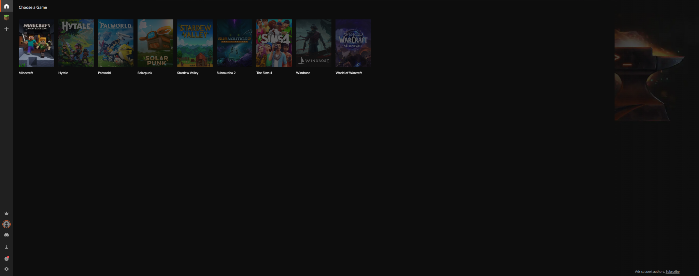
4. Ak CurseForge Minecraft nenašlo
Ak CurseForge Minecraft nenašlo, klikni na + na ľavej strane obrazovky a daj vyhľadať Minecraft. Ak ho ani potom nenájde, klikni na Manually add a game a nájdi priečinok, kde máš nainštalovaný celý Minecraft.
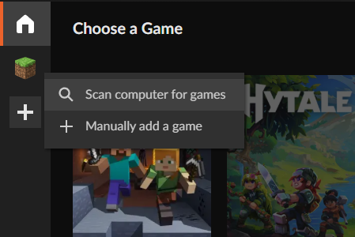
Návod 03
Ovládanie mapy
Návod na prácu s webovou mapou Modserver3.
1. Otvorenie mapy
Mapu otvoríš tlačidlom M (pokiaľ nie je zmenené).
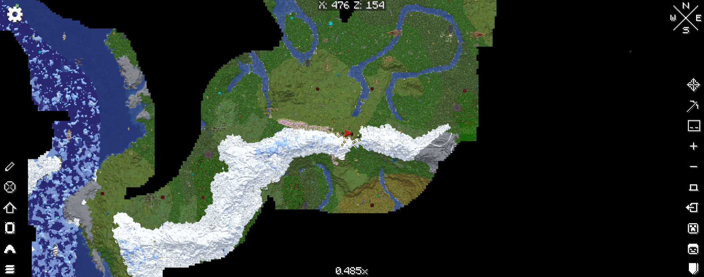
2. Waypointy
Keď stlačíš B, vytvoríš waypoint a otvorí sa ti toto menu. Tu môžeš nastaviť farbu, názov a typ waypointu.
Ak chceš vidieť waypoint priamo vo svete, nechaj nastavenie Local. Ak ho chceš vidieť iba na mape, nastav World map Loc.
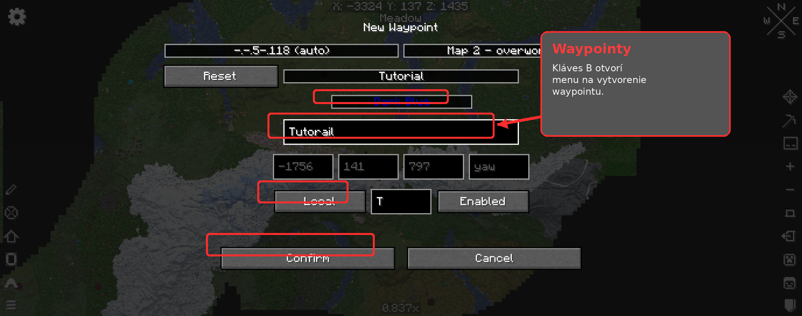
3. Temporary waypoint
Stlačením + vytvoríš dočasný waypoint, ktorý zmizne, keď opustíš svet.
Tieto waypointy sú dobré na určenie miesta, kam sa chceš dostať. Odstrániš ich tlačidlom Delete, rovnako ako každý iný waypoint.
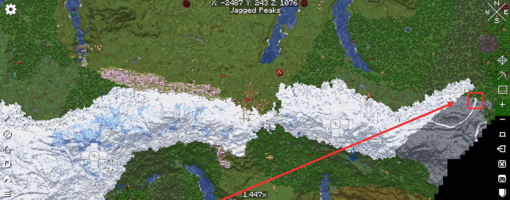
4. Cave Mode
Kliknutím na ikonu oblúčika v spodnej časti bočnej lišty otvoríš menu Cave Mode.
Cave Mode má dva typy: Full zobrazí všetky jaskyne a Layered zobrazí iba jaskyne v nastavenej výške.
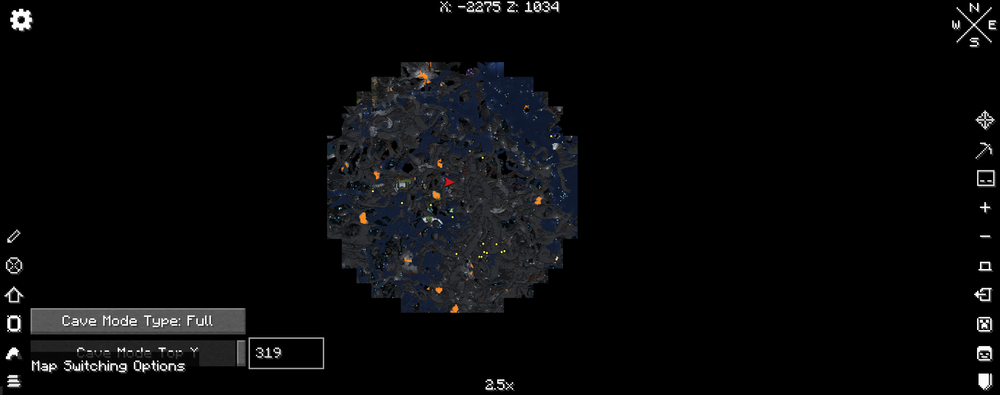
5. Drawing Mode
Po kliknutí na najvyššiu ikonku v ľavom dolnom stĺpci sa spustí Drawing Mode.
Jednotlivé nástroje zhora nadol:
- 1. pero na kreslenie rovných čiar,
- 2. nástroj na vytvorenie nekonečnej čiary,
- 3. zvýraznenie celých chunkov,
- 4. písanie textu do mapy po kliknutí do mapy,
- 5. zmena farby,
- 6. meranie vzdialenosti.
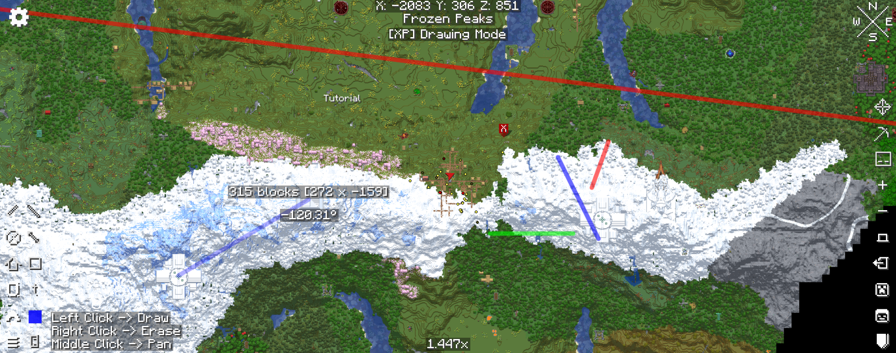
6. Online mapa
K dispozícii je aj online mapa Modserver3, na ktorej nájdeš všetky štáty, regióny a mestá.
Online mapa obsahuje aj zoznam všetkých objektov a vyhľadávanie, pomocou ktorého môžeš rýchlo nájsť mesto, región, štát alebo inú štruktúru.
Mapu otvoríš na: heafast.github.io/Modserver3map
Otvoriť online mapu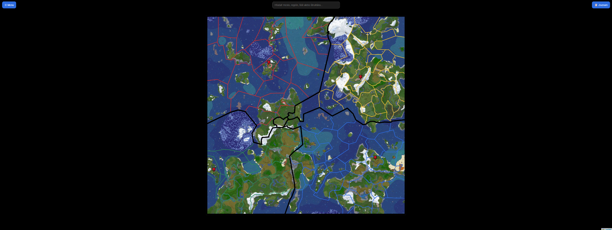
Návod 04
Odporúčané keybindy
Nastavenia kláves, ktoré zjednodušia hranie a zabránia konfliktom.
1. Ako sa dostať do Key Binds
Choď do Game Menu → Options → Controls → Key Binds.
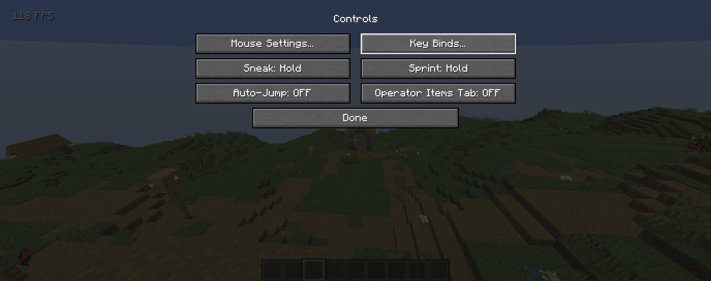
2. Používanie vyhľadávača
Vyhľadávač v hornej časti obrazovky umožňuje filtrovať keybindy podľa klávesy, názvu akcie alebo modu.
Použi tieto príkazy:
-
key:"klávesa"– zobrazí všetky akcie, ktoré používajú konkrétnu klávesu, napríkladkey:"M". -
name:"akcia"– vyhľadá konkrétnu akciu podľa názvu. -
category:"mod"– zobrazí keybindy patriace jednému modu.
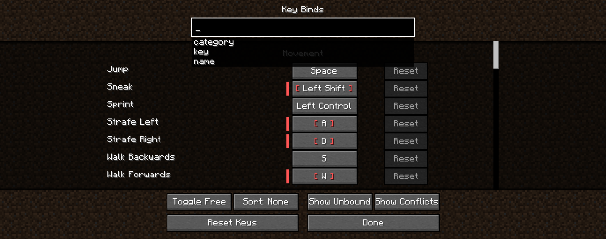
3. Konflikt Xaero mapy a Voice Chatu
Ak sa pri otvorení mapy vypína mikrofón, ide o konflikt medzi Xaero mapou a Voice Chatom.
Odporúčané riešenie je prenastaviť akciu Open World Map na kláves Right Control.
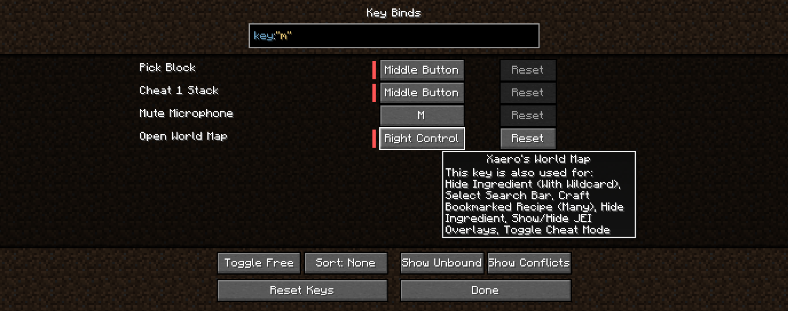
4. Konflikt Eureka, Crafting on a Stick, Call Horse a Voice Chat
Mody Eureka, Crafting on a Stick, Call Horse a Voice Chat používajú rovnakú klávesu V, takže vzniká konflikt.
Odporúčané je prenastaviť tieto klávesy na stavy tak, ako sú nastavené na obrázku.
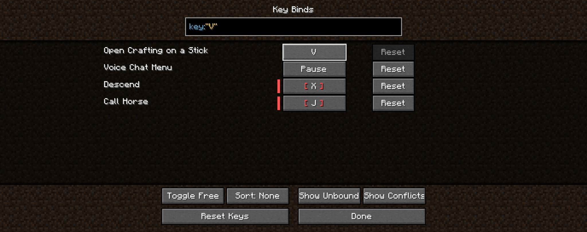
5. Konflikt Oculus a Essential
Klávesa R pre Emote Wheel v mode Essential môže zároveň aktivovať Reload Shaders v mode Oculus.
Aby sa pri otvorení emote wheelu zbytočne nereštartovali shadery, prenastav Reload Shaders na nepoužívanú klávesu F8.
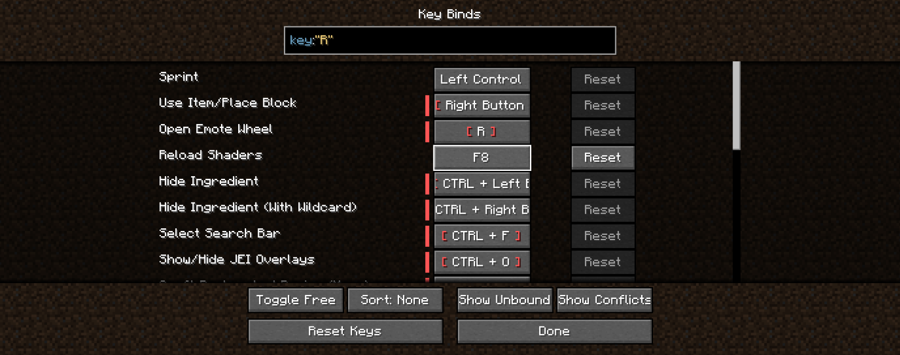
6. Konflikt Xaero World Map, Field Guide a Traveler's Backpack
Mody Xaero World Map, Field Guide a Traveler's Backpack používajú klávesu B, takže vzniká konflikt.
Odporúčané nastavenie je: Open Field Guide prenastaviť na F9 a Open Backpack prenastaviť na Right Alt.
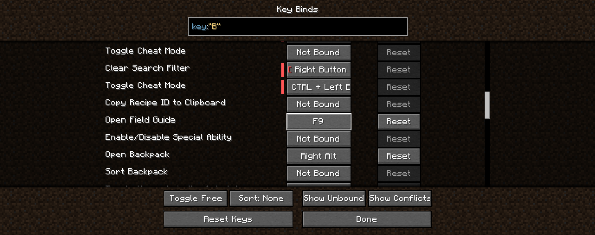
7. Konflikt Essential, Fullbright, Curios a Voice Chat
Medzi modmi Essential, Jack's Fullbright, Curios a Voice Chat môže vznikať konflikt kláves.
Odporúčané nastavenie je:
- Toggle Jack's Fullbright → Enter
- Essential menu → F10
- Open/Close Curios Inventory → H
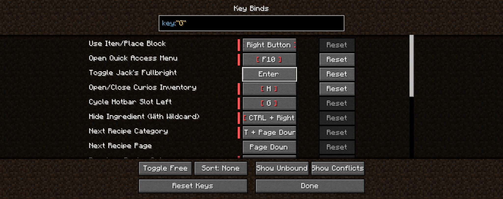
8. Konflikt Curios, Voice Chat a Essential
Medzi modmi Curios, Voice Chat a Essential môže vzniknúť konflikt kláves.
Odporúčané nastavenie je:
- Friends GUI → F12
- Hide Voice Chat Icons → ô
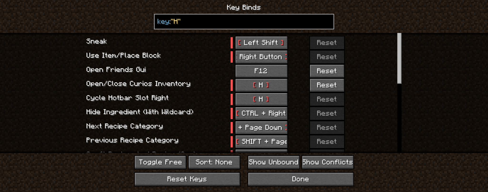
9. Konflikt Call Horse a Social Interaction Screen
Ak majú Call Horse a Social Interaction Screen nastavenú rovnakú klávesu, vzniká konflikt.
Odporúčané riešenie je prenastaviť Social Interaction Screen na Left Control + P. Takto sa obrazovka dá ľahko otvoriť pri nastavovaní osobného koňa.
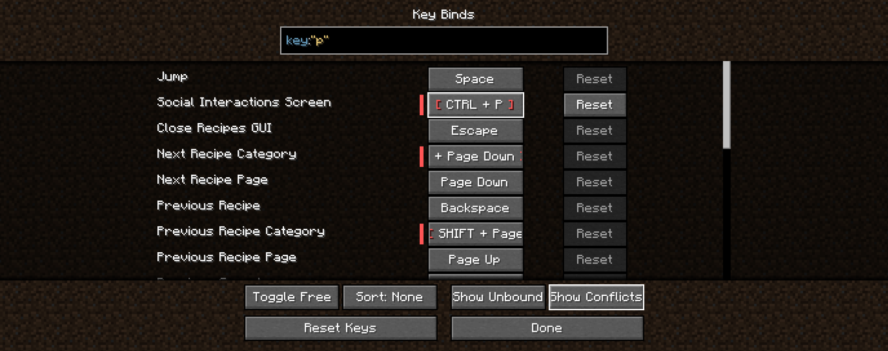
10. Konflikt Xaero Minimap, Zoom a Traveler's Backpack
Medzi funkciami modov Xaero Minimap, Zoom a Traveler's Backpack môže vzniknúť konflikt kláves.
Odporúčané nastavenie je:
- Enlarge Minimap → Menu
- Swap Tool/Change Hose Mode → Right Shift
- Zoom → ň
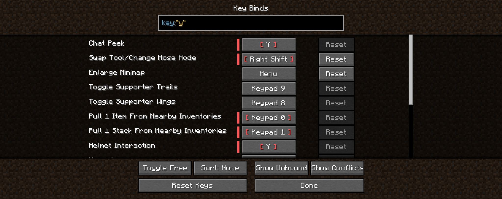
11. Konflikt Essential, Zoom a Eureka
Medzi modmi Essential, Zoom a Eureka môže vzniknúť konflikt kláves.
Odporúčané riešenie je prenastaviť funkciu Cruise z modu Eureka na klávesu Y.
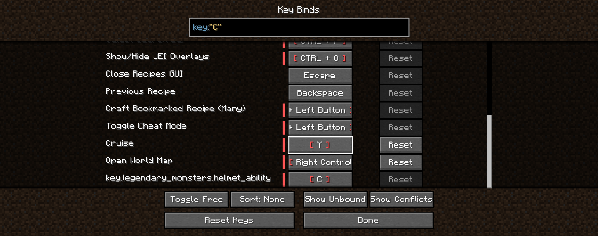